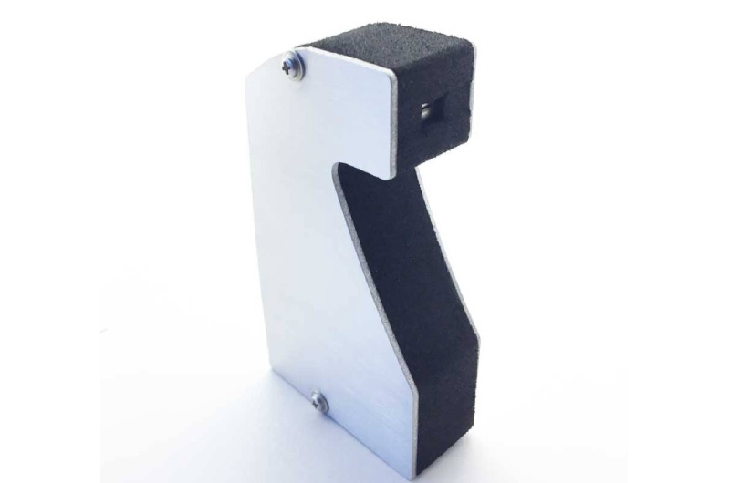

Cheap and DIY Spectrometers

The general base line solution to spectrometers is Ocean Optics. While bare bones and well known, it's by no means cheap and the software is propriatary.
Consider the Spectruino, at only half a grand and with open source software. Have you tried the Spectruino? We'd love to know your thoughts.
The cheapest solution we know of is the DIY Desktop Spectrometry Kit from Public Lab. It even has a purchasable kit for just $50.